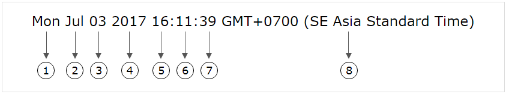

Đối tượng ngày tháng trong JavaScript
1) Đối tượng ngày tháng là gì !?
- Đối tượng ngày tháng là một tập hợp các thông tin về thời gian (thứ, ngày, tháng, năm, giờ, phút, giây, mili giây, múi giờ) của một thời điểm nào đó.
- Khi ta hiển thị một đối tượng ngày tháng lên màn hình thì nó sẽ có dạng như sau:

- Trong đó:
| Vị trí số 1 | THỨ của đối tượng ngày tháng | Là chữ viết tắt từ 3 ký tự đầu tiên của thứ trong tiếng anh:
|
| Vị trí số 2 | THÁNG của đối tượng ngày tháng | Là chữ viết tắt từ 3 ký tự đầu tiên của tháng trong tiếng anh:
|
| Vị trí số 3 | NGÀY của đối tượng ngày tháng | Một số có giá trị từ 1 - 31 |
| Vị trí số 4 | NĂM của đối tượng ngày tháng | Một số có giá trị từ 1000 - 9999 |
| Vị trí số 5 | GIỜ của đối tượng ngày tháng | Một số có giá trị từ 00 - 23 |
| Vị trí số 6 | PHÚT của đối tượng ngày tháng | Một số có giá trị từ 00 - 59 |
| Vị trí số 7 | GIÂY của đối tượng ngày tháng | Một số có giá trị từ 00 - 59 |
| Vị trí số 8 | MÚI GIỜ của đối tượng ngày tháng | Trình duyệt sẽ dựa vào vùng lãnh thổ của bạn để hiển thị múi giờ tương ứng |
2) Cách khai báo (khởi tạo) một đối tượng ngày tháng
- Để khai báo một đối tượng ngày tháng, ta sử dụng cấu trúc new Date()
- Cấu trúc new Date() được chia làm bốn cú pháp chính:
- Cú pháp 1: new Date()
- Cú pháp 2: new Date(milliseconds)
- Cú pháp 3: new Date(year, month, day, hours, minutes, seconds, milliseconds)
- Cú pháp 4: new Date(chuỗi ngày tháng)
2.1) new Date()
- Cú pháp new Date() dùng để tạo một đối tượng ngày tháng với các thông tin về thời gian sẽ là thời điểm hiện tại (thời điểm khi câu lệnh được thực thi).
<script>
var date = new Date();
//Biến date là một đối tượng ngày tháng chứa thông tin về thời điểm hiện tại của bạn
//
</script>
2.2) new Date(milliseconds)
- Cú pháp new Date(milliseconds) dùng để tạo một đối tượng ngày tháng với thời điểm là sau ngày 01/01/1970 00:00:00 (theo giờ tiêu chuẩn UTC) một khoảng thời gian milliseconds. Các thông tin về thời gian của đối tượng ngày tháng sẽ được hệ thống tự động xác định dựa vào thời điểm đó.
- Ví dụ: 1296000000 milliseconds bằng với 15 ngày. Khi thực thi new Date(1296000000) thì ta sẽ được một đối tượng ngày tháng với thời điểm là sau 01/01/1970 00:00:00 (theo giờ tiêu chuẩn UTC) 15 ngày.
<script>
var date = new Date(1296000000);
//
</script>
- Chắc các bạn đang thắc mắc một điều là:
"Tại sao 15 ngày sau thời điểm 01/01/1970 00:00:00 (theo giờ tiêu chuẩn UTC)
không phải là 16/01/1970 00:00:00 (theo giờ tiêu chuẩn UTC)
mà lại là 16/01/1970 07:00:00 GMT+0700 (SE Asia Standard Time) !?"
- Thắc mắc đó sẽ được giải đáp trong phần MÚI GIỜ & GIỜ PHỐI HỢP QUỐC TẾ ở cuối bài hướng dẫn này.
2.3) new Date(year, month, day, hours, minutes, seconds, milliseconds)
- Cú pháp new Date(year, month, day, hours, minutes, seconds, milliseconds) dùng để tạo một đối tượng ngày tháng với các thông tin về thời gian sẽ do bạn tự xác định bằng các đối số year, month, day, hours, minutes, seconds, milliseconds
Tạo một đối tượng ngày tháng với thời điểm là 12/03/1974 10:30:00:999
<script>
var date = new Date(1974,2,12,10,30,00,999);
//
</script>
- Ở ví dụ trên, đối số của tháng ba tôi không nhập là 3 mà tôi nhập là 2, vì đối số tháng có giá trị trong khoảng từ 0 đến 11:
- Tháng một = 0
- Tháng hai = 1
- Tháng ba = 2
- ....
- Tháng mười hai = 11
- Ngoài ra, với cú pháp này thì ta không nhất thiết phải điền đủ bảy đối số, chỉ cần từ hai đối số trở lên là được, các đối số còn lại hệ thống tự động thiết lập giá trị mặc định cho nó.
Giới thiệu thêm:
- Như chúng ta đã biết:
- Một năm có tối đa 12 tháng. Nên đối số month chỉ có thể nhập từ 0 đến 11
- Một tháng có tối đa 31 ngày. Nên đối số day chỉ có thể nhập từ 1 đến 31
- Một ngày có tối đa 24 giờ. Nên đối số hours chỉ có thể nhập từ 0 đến 23
- Một giờ có tối đa 60 phút. Nên đối số minutes chỉ có thể nhập từ 0 đến 59
- Một phút có tối đa 60 giây. Nên đối số seconds chỉ có thể nhập từ 0 đến 59
- Một giây có tối đa 1000 mili giây. Nên đối số milliseconds chỉ có thể nhập từ 0 đến 999
- Vậy "Nếu ta nhập đối số với giá trị nằm ngoài phạm vi cho phép thì chuyện gì sẽ xảy ra !?"
- Trả lời:
2.4) new Date(chuỗi ngày tháng)
- Cú pháp new Date(chuỗi ngày tháng) dùng để tạo một đối tượng ngày tháng với các thông tin về thời gian sẽ được hệ thống tự động xác định dựa vào chuỗi ngày tháng do bạn đưa ra.
- Các bạn sẽ được tìm hiểu kỹ về cách định dạng chuỗi ngày tháng trong bài hướng dẫn tiếp theo.
3) Múi giờ (Timezone) & Giờ phối hợp quốc tế (UTC)
- Khái niệm múi giờ và giờ phối hợp quốc tế rất dài dòng và phức tạp, nếu giải thích tường tận hai khái niệm đó thì sẽ mất rất nhiều thời gian. Cho nên ở phần này tôi chỉ mô tả sơ qua giúp bạn vừa đủ hiểu để có thể áp dụng vào lĩnh vực lập trình JavaScript thôi (^_^)
- Như chúng ta đã biết, vào cùng một thời điểm, nhưng các quốc gia nằm ở những vùng lãnh thổ khác nhau sẽ có một thời gian khác nhau. Ví dụ:
- Hiện tại ở Việt Nam là
- Tuy nhiên, cùng thời điểm này thì ở Ấn Độ lại là
- Và Nhật Bản là
- ....
- Nguyên nhân của sự khác biệt trên chính là là do việc phân chia múi giờ giữa các vùng lãnh thổ trên thế giới. "Vậy cách phân chia múi giờ như thế nào !?"
- Chúng ta có một hệ thống thời gian gọi là giờ phối hợp quốc tế (UTC), trong đó có một móc thời gian dùng để làm tiêu chuẩn. Mỗi vùng lãnh thổ sẽ có một múi giờ, múi giờ này chênh lệch một khoảng thời gian (có thể trễ hơn hoặc sớm hơn) so với giờ tiêu chuẩn.
- Ví dụ, dưới đây là bảng một số múi giờ trong hệ thống giờ phối hợp quốc tế:
| Vùng lãnh thổ | Múi giờ | Mô tả |
|---|---|---|
| Thái Bình Dương | -8 | Chạy sớm hơn giờ tiêu chuẩn 8 tiếng |
| Miền núi nước Mỹ | -7 | Chạy sớm hơn giờ tiêu chuẩn 7 tiếng |
| Miền trung nước Mỹ | -6 | Chạy sớm hơn giờ tiêu chuẩn 6 tiếng |
| Miền đông nước Mỹ | -5 | Chạy sớm hơn giờ tiêu chuẩn 5 tiếng |
| Đại Tây Dương | -4 | Chạy sớm hơn giờ tiêu chuẩn 4 tiếng |
| GIỜ TIÊU CHUẨN | GIỜ TIÊU CHUẨN | GIỜ TIÊU CHUẨN |
| Trung Âu | +1 | Chạy trễ hơn giờ tiêu chuẩn 1 tiếng |
| Đông Âu | +2 | Chạy trễ hơn giờ tiêu chuẩn 2 tiếng |
| Moskva | +3 | Chạy trễ hơn giờ tiêu chuẩn 3 tiếng |
| Ấn Độ | +5:30 | Chạy trễ hơn giờ tiêu chuẩn 5 tiếng rưỡi |
| Việt Nam | +7 | Chạy trễ hơn giờ tiêu chuẩn 7 tiếng |
| Tây Úc, Hồng Kông, Trung Quốc | +8 | Chạy trễ hơn giờ tiêu chuẩn 8 tiếng |
| Nhật Bản, Hàn Quốc | +9 | Chạy trễ hơn giờ tiêu chuẩn 9 tiếng |
| Đông Úc | +10 | Chạy trễ hơn giờ tiêu chuẩn 10 tiếng |
- Với bảng trên, ta có thể xác định được thời gian chênh lệch giữa các vùng lãnh thổ. Ví dụ:
- Ấn Độ chạy trễ hơn giờ tiêu chuẩn 5 tiếng rưỡi
- Việt Nam chạy trễ hơn giờ tiêu chuẩn 7 tiếng
- Nhật Bản chạy trễ hơn giờ tiêu chuẩn 9 tiếng
- Ấn Độ chạy sớm hơn Việt Nam 1 tiếng rưỡi và sớm hơn Nhật Bản 3 tiếng rưỡi
- Việt Nam chạy trễ hơn Ấn Độ 1 tiếng rưỡi và sớm hơn Nhật Bản 2 tiếng
- Nhật Bản chạy trễ hơn Ấn Độ 3 tiếng rưỡi và trễ hơn Việt Nam 2 tiếng
- Hiện tại ở Việt Nam mình là
- Tuy nhiên, cùng thời điểm này ở Ấn Độ lại là
- Và Nhật Bản là
- Trong phần 2.2) new Date(milliseconds), chúng ta có thắc mắc một điều là:
"Tại sao 15 ngày sau thời điểm 01/01/1970 00:00:00 (theo giờ tiêu chuẩn UTC)
không phải là 16/01/1970 00:00:00 (theo giờ tiêu chuẩn UTC)
mà lại là 16/01/1970 07:00:00 GMT+0700 (SE Asia Standard Time) !?"
- Thật ra thì 16/01/1970 00:00:00 (theo giờ tiêu chuẩn UTC) và 16/01/1970 07:00:00 GMT+0700 (SE Asia Standard Time) hoàn toàn giống nhau, chúng là cùng một thời điểm. Việt Nam chạy trễ hơn giờ tiêu chuẩn 7 tiếng cho nên vào thời điểm giờ tiêu chuẩn là 0 giờ thì khi đó ở Việt Nam là 7 giờ (vì trình duyệt trả về theo giờ địa phương của bạn nên mới chuyển đổi ra như thế).